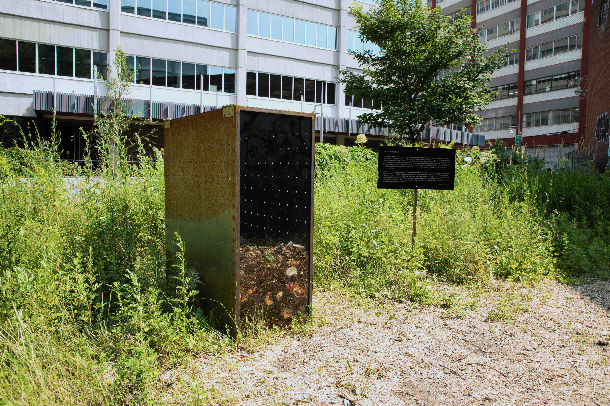
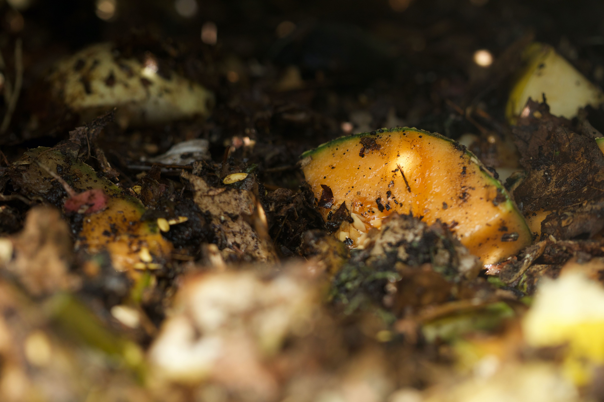
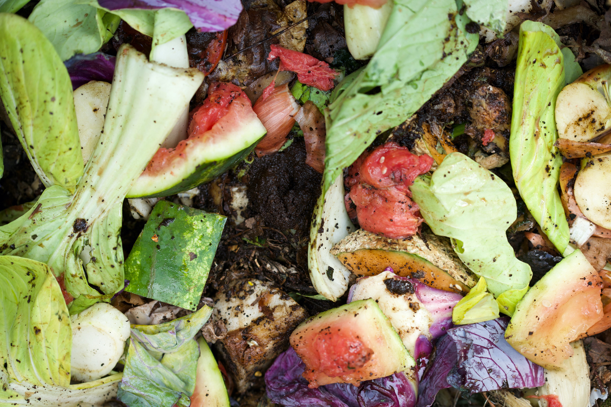
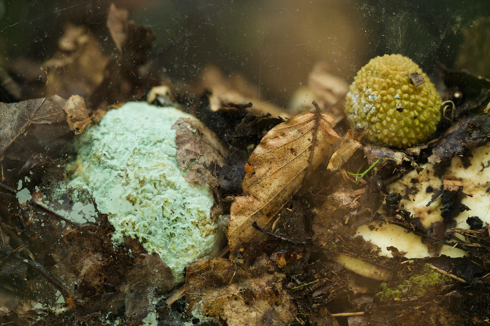
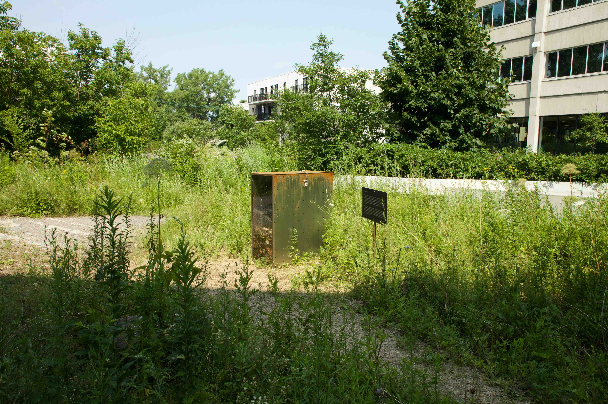
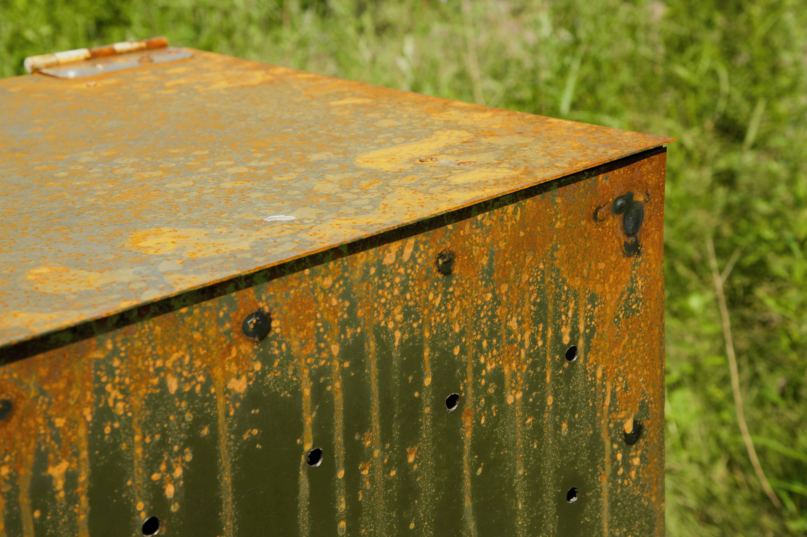
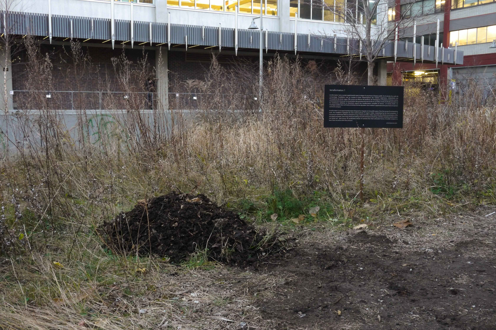

terraformation I, 2024.

Champ des Possibles, Montréal, 2024.
FR //
terraformation I est un projet expérimental visant à intégrer la pourriture à l’espace public. Sur la durée d’un cycle de compostage, l’installation met en lumière la lente métamorphose des matières organiques, métabolisées par l’écosystème du terrain vague. Elle convie une alliance de bactéries, de champignons, d’insectes et d’autres vivants, temporairement réunie par la concentration des processus de mort et de vie. La chaleur monte, les fluides percolent et les membranes cellulaires se dissolvent, jusqu’à leur transformation complète en humus - en terreau fertile. Un recyclage accéléré des nutriments et de leurs formes épuisées. Une invitation à apprendre de la pourriture et à penser comme le compost.
ENG //
terraformation I is an experimental project designed to integrate rot into public space. Over the course of a composting cycle, the installation highlights the slow metamorphosis of organic matter, metabolized by the local ecosystem. It convenes an ephemeral alliance of bacteria, fungi, insects and other critters, bound together by the critical concentration of life and death processes. Heat rising, fluids percolating and cell membranes dissolving, until their complete transformation into fertile soil - dark humus. An accelerated release of nutrients from their exhausted forms. A humble invitation to learn from rot and to think like compost.







